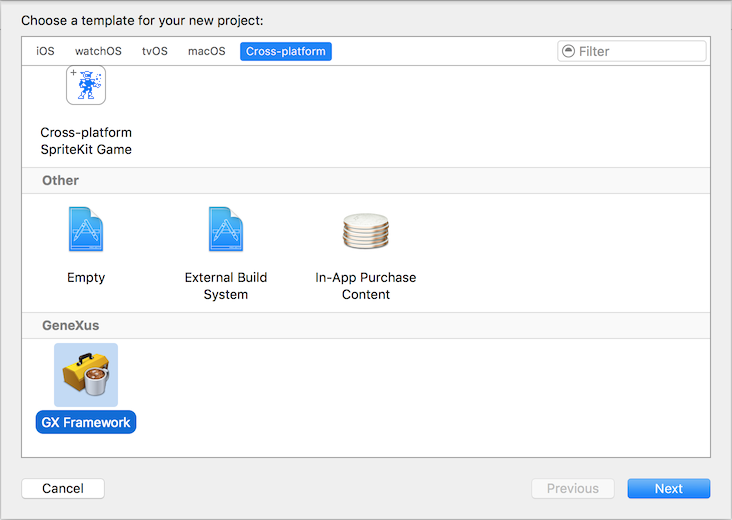
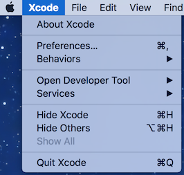
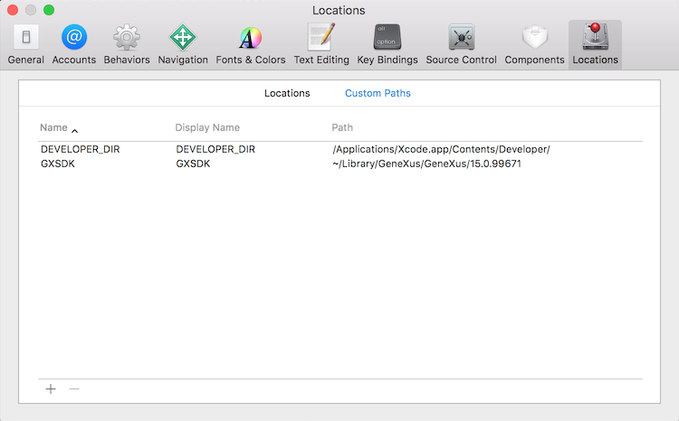
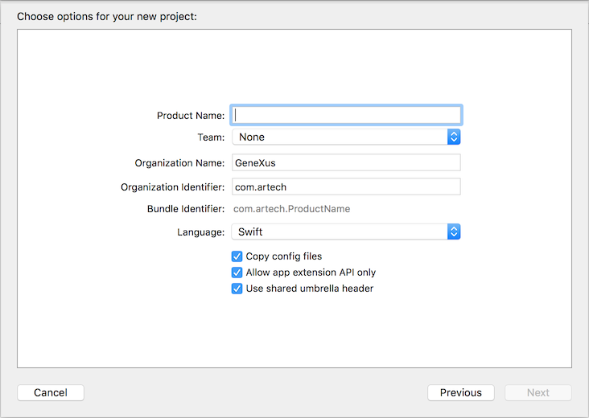

IntroductionWhen developing a User Control or External Object for any of the Apple platforms (iOS, AppleWatch or AppleTV), you may find it helpful to start off with an Xcode template. Such Xcode template is provided by the GeneXus SDK. Install de SDK, and then search for the XcodeTemplates folder under the installation directory. Installing the templateTo install de template, copy the XcodeTemplates folder from the GeneXus SDK installation directory anywhere in your Mac computer, and run the script installTemplates.sh under xcTemplates from a Terminal.app. To check if the install succeded, go to Xcode, File > New > Proyect..., select Cross-platfotm, and under GeneXus you should see a GX Framework option.  Configuring XcodeDefine GXSDK global variableYou need to define a GXSDK global variable in Xcode, pointing to the path where the GeneXus Frameworks are located (typically /Users/<user_name>/Library/GeneXus/GeneXus/<gx_version_number>). To do that, go to Xcode > Preferences... > Locations > Custom Paths(*) and add the GXSDK path.   (*) Note: Custom Paths option was named Source Trees in Xcode 7. Creating the projectWhen you select the GX Framework option from the New Project dialog in Xcode, the following dialog is presented.  Here you have to configure:
Implement your User Control or External ObjectNow you need to add the implementation of your extension by subclassing the appropiate base clases. You may refer to Creating User Controls for iOS and External Object for iOS Devices for more information. Build and deployWhen you build your Xcode project, a framework is created. Frameworks are special folders in OS X where the implementation of the component is stored, along with all the necessary resources. If you want to learn more about frameworks, you can read all about them in Apple's Introduction to Framework Programming Guide. You need to build both the device and simulator instances of the framework. To do that, in Xcode select a simulator from the Schemes dropdown and build, then select a device and build again. After that is done, you need to find the build folder in Finder. The easiest way of doing that is right-clicking the project in Xcode and then selecting Show in Finder. The build folder will contain two additional folders: Debug-iphonesimulator and Debug-iphoneos. Both subfolders contain a .framework with the implementation for each platform. You'll need to zip both frameworks, as both of them are needed. User ControlsFor User Controls, you'll have a .control file that you need to modify in order to use the frameworks previously created. Add the following to your .control file:
<iOS_SupportFiles>
<File>iphoneos\MyUserControl.framework.gxzip</File>
<File>iphonesimulator\MyUserControl.framework.gxzip</File>
</iOS_SupportFiles>
<iOS_ReferencedFiles>
<File embed="true">./UserControls/$(PLATFORM_NAME)/MyUserControl.framework</File>
</iOS_ReferencedFiles>
where MyUserControl is the name of the user control External ObjectsFor External Objects, an Extension Library is needed to deploy them automatically. That is, to include the External Object's implementation in the Xcode project each time the developer performs a Build in GeneXus. Extension Libraries are available for iOS since GeneXus 15 Upgrade 6. |
| Backlinks | ||
| BlurredImage: sample User Control for iOS | Creating User Controls for iOS | External Object for iOS Devices |
| HowTo: Migrate an External Object for iOS from Evolution 3 to GeneXus 15 |